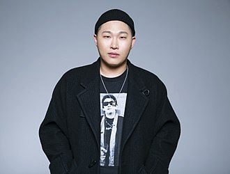

Moon Ji-hoon (Korean: 문지훈, born October 14, 1986), better known by the stage name Swings (Korean:스윙스), is a South Korean rapper.

Swings debuted in 2008 with the extended play Upgrade. He joined the hip hop group Uptown in 2009 but left by the end of the year. He released his first full-length album, Growing Pains, in 2010.